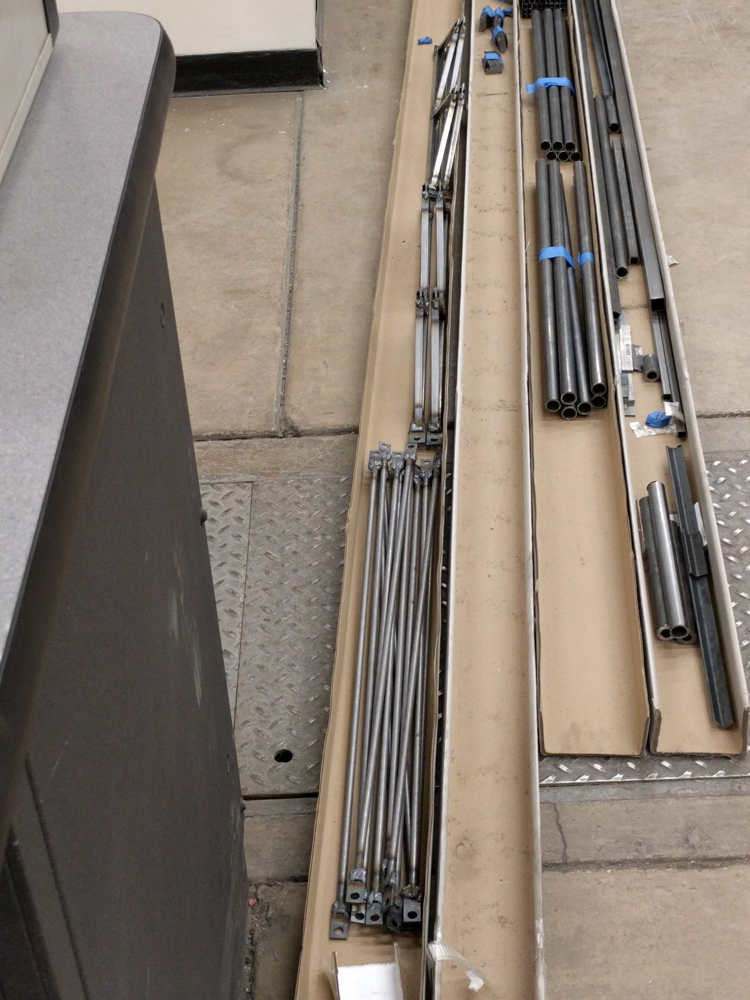

My Steel Bridge Team Experiences
I have participated in several steel bridge competitions. My sophomore year I joined the IIT steel bridge team and assisted in the bridge fabrication and helped build the bridge at our regional competition. We were fortunate to win second place at regionals that year meaning we advanced to the national competition. The national competition was hosted in Provo, Utah. The trip and competition were a wonderful experience. We performed extremely well in the competition, winning third place in the construction speed category.
The next year, I was one of the co-captains for our steel bridge team. We designed an arch-cantilever hybrid bridge. Being the first major design project that I had worked on, I went a little crazy on the design. It was extremely complicated to plan, fabricate, and assemble. It took so long to fabricate that we only finished a few days before the competition. Unfortunately, we received fourth place at regionals and missed advancing to nationals that year.
The following year, I was the head team captain. After the disappointment of not making it to nationals, we created a significantly simpler bridge for the 2018 competition. This allowed it to be designed and fabricated in much less time. The extra time was used to help our team practice building the bridge. At the competition, we were able to assemble it in just under five minutes. This excellent performance as well as the simple design allowed our team to win a number of regional awards including first place in construction speed, construction efficiency, economy, and overall first place. This allowed us to advance to the national competition hosted by the University of Illinois at Urbana-Champaign. We were again extremely successful at this competition winning first place in the lightness category. This achievement was a fantastic capstone to my steel bridge endeavors.
2018 ASCE/AISC Student Steel Bridge Project
The bridge we designed for the 2018 competition was likely the most award winning in our school’s history, and among the best designs. There were a number of key design characteristics that allowed our team to be so successful. By using standardized part geometries, and a simple deck bridge design, only 42 structural members were needed. As well, the members took only five different configurations, vastly simplifying fabrication. This allowed our six-person team to fabricate the bridge in under two months. The reduced number of members also allowed for fast assembly. In practice our fastest assembly time was just over four minutes using four builders. Finally, the simple tubular members as well as simple plate connections allowed for an extremely light bridge.
The bridge weighed in at only 106 pounds. The bridge had a free span of nearly eighteen feet, supported the 2,600-pound load at midspan, and deflected less than 0.4 inches while doing so.
This was a highly successful project in all aspects (planning, design, fabrication, and competition.) It was always a joy to head to the shop at the end of the school day to work on the bridge for a few hours each night. I am extremely proud of this project, and happy to share it here.
3D Model
Fabrication Shop
Partially Fabricated Bridge Members

Me Milling a Connection
Completed Bridge Undergoing a Load Test
Bridge at the Regional Competition
Bridge Display Poster